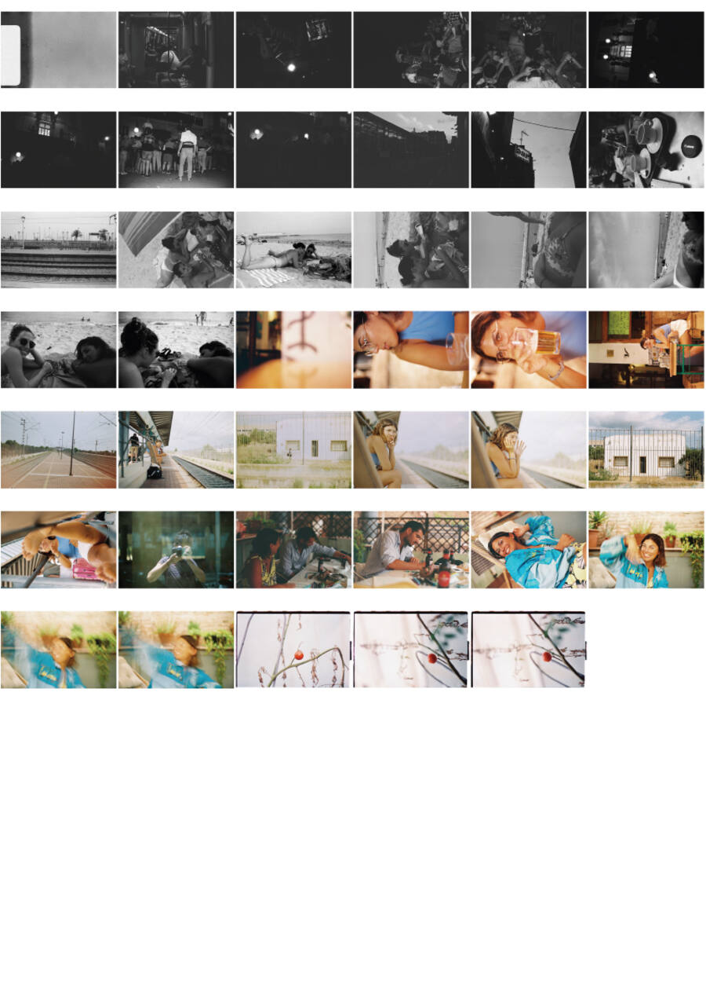
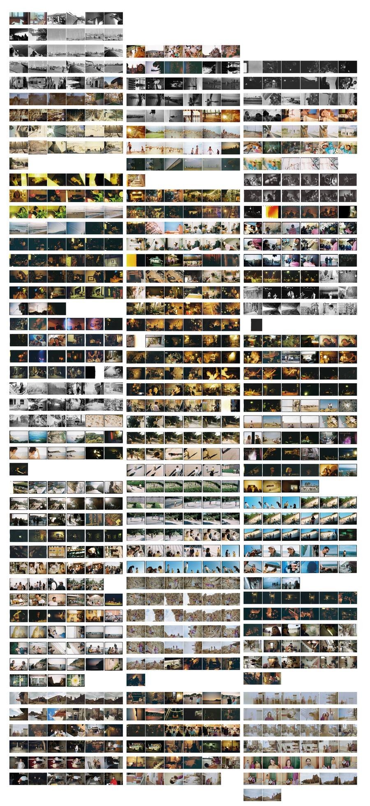
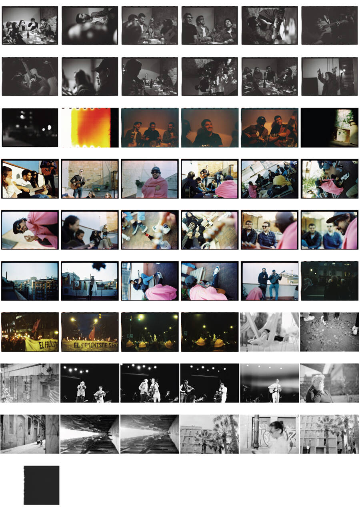
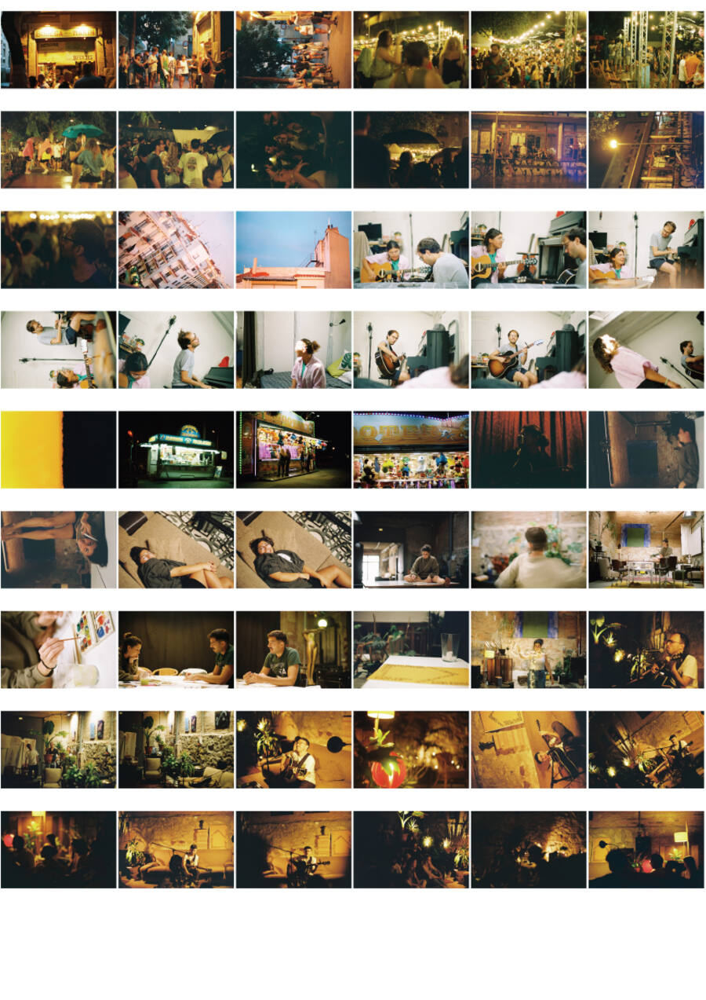
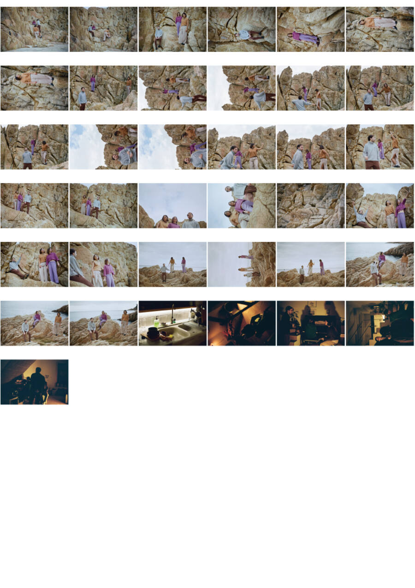
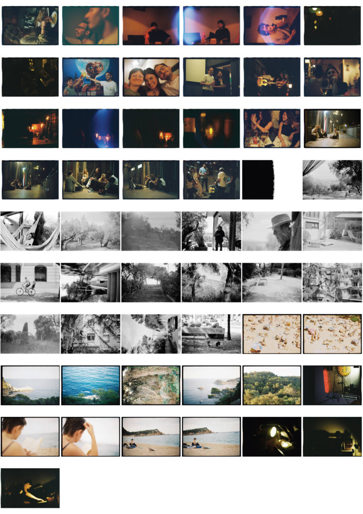
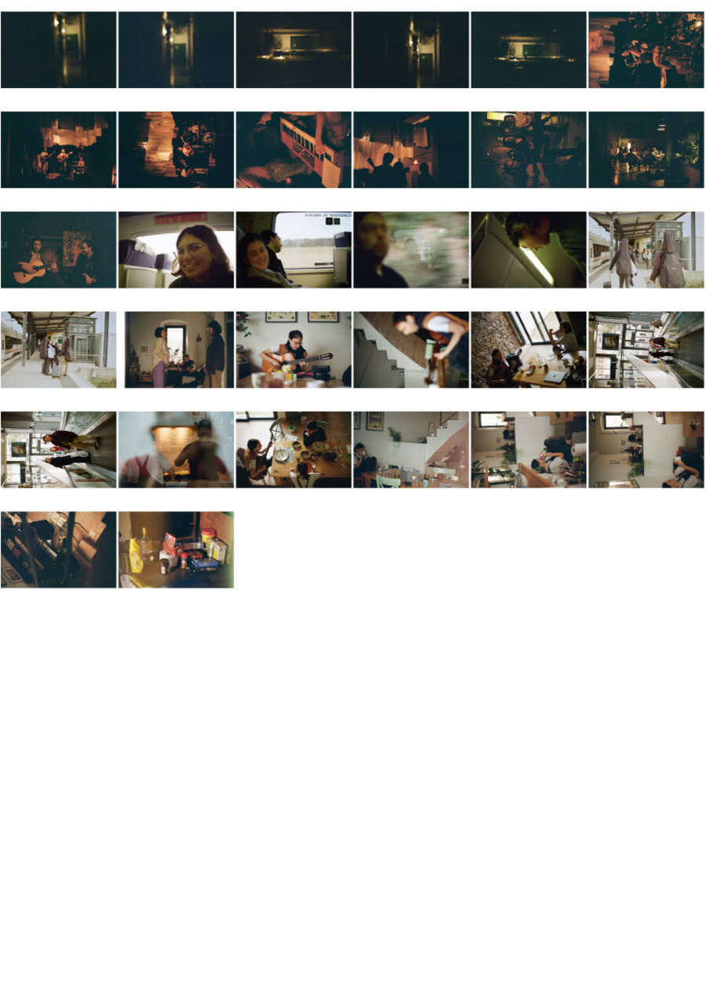
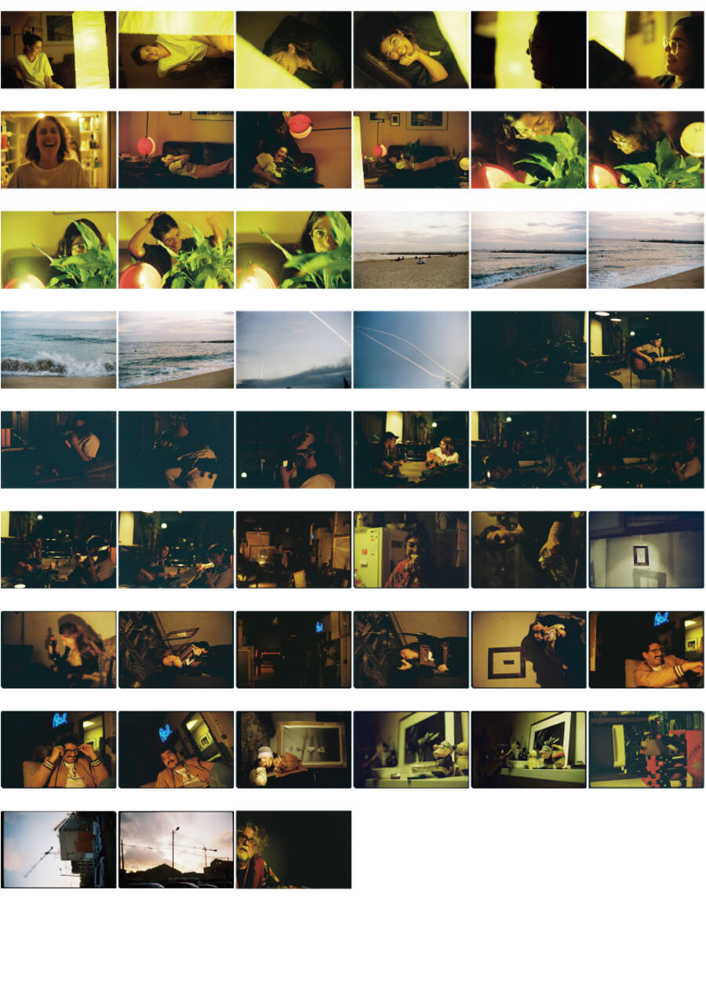

fotografía analógica de situaciones.
35mm · zoom · barcelona · 2015–2024
luisaduggan.github.io
verano 2022. las vías de la costa y la playa vacía antes de la temporada. primer rollo del año, b/n. algo entre el viaje y el final del viaje.
soundtrack
Chet Baker — Almost Blue
plancha de contacto · r·03 · 41 fotogramas



costa brava, 2024. retratos en las rocas. luz plana de invierno, colores apagados. personas en el límite entre el agua y la piedra.
soundtrack
Brian Eno — An Ending (Ascent)
plancha de contacto · r·mar · 38 fotogramas

calella, diciembre 2023. la feria de navidad y los interiores después. luz de carrusel, luz de cocina, luz de escenario improvisado.
soundtrack
Devendra Banhart — At the Hop
plancha de contacto · r·01 · 35 fotogramas

verano 2022. figuras sobre las rocas de la costa. color desaturado, horizonte alto. el cuerpo como escala frente a la piedra.
soundtrack
Arca — Riquiqui
plancha de contacto · r·04 · 37 fotogramas

barcelona, 2024. patinadores, mercado, calle. el zoom como distancia necesaria. situaciones que no se repiten.
soundtrack
Kelman Duran — 13th Month
plancha de contacto · r·06 · 34 fotogramas

músicos en casas, en bares, en estudios improvisados. la guitarra como eje. luz amarilla, paredes con memoria.
soundtrack
Nick Drake — Place To Be
plancha de contacto · r·05 · 32 fotogramas

personas en movimiento. sombras largas, luz cenital. el zoom comprime el espacio, acerca lo que estaba lejos.
soundtrack
Steve Reich — Music for 18 Musicians
plancha de contacto · r·07 · 54 fotogramas

interiores de verano. cocinas, salones, terrazas. la luz que entra por las persianas a las cuatro de la tarde.
soundtrack
Broadcast — Come On Let's Go
plancha de contacto · r·02 · 28 fotogramas

sobre el trabajo
trabajo con analógico, casi siempre 35mm y objetivos zoom. me interesa el momento en que algo ordinario se convierte en otra cosa: una mirada, un encuadre, una fracción de segundo que no tenía por qué ser nada.
con base en barcelona desde 2015. proyectos documentales y experimentales en españa y portugal.
datos del archivo
fragmento de archivo
r·03 · fragmento · 2022
escribir un mensaje